Rules
The objective of the game is to correctly identify the colours and positions of a number of coloured balls. The hidden solution will follow the parameters set via the settings tab. The settings tab is disabled in the challenge mode, the rules of the challenge are detailed below.
The player selects a sequence of coloured balls and uses the resulting peg indicators to work their way toward the solution. A correct colour in the wrong place results in a white peg. A correct colour in the correct place results in a black peg.
A correct guess will result in all black pegs
Gameplay
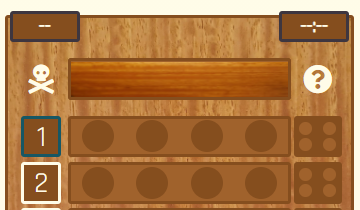Depending on your chosen settings, the top of the game board may have:
- The best score (top left)
- The best time (top right)
- The hidden solution row
- A skull and bones that allows the user to give up
- A question mark that allows the user to reveal a ball
If your settings allow it, the current time will be displayed in the header next to the game name
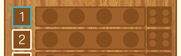A blue border indicates the currently active row, shown here around row 1. Each row consists of:
- A number: to indicate the score if you correctly guess on this row
- A row of balls: equal to the number of balls selected via the settings tab
- A set of pegs: equal to the number of balls
To select a colour, first tap (or click) the ball you wish to change. This will give the selected ball a border
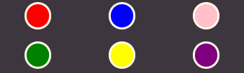The colour selection panel will appear. It will contain colours equal to the number of colours selected in the settings tab. Simply tap (or click) the colour you wish the selected ball to be
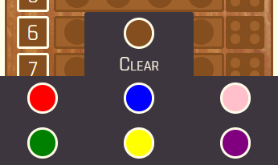If you make a mistake, simply re-select the ball you wish to change. The colour selection panel will now have a 'Clear' option. You may clear the colour, or select the new colour you wish to use
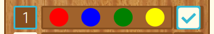Once all colours have been selected, an icon will appear. Tap (or click) the icon to confirm your guess and see the result
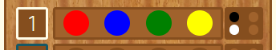Once you have confirmed your guess, the result pegs will be displayed in that row:
- A black peg indicates you have a colour correct and in the correct position
- A white peg indicates you have a colour correct but it is in the wrong position
- No peg indicates an incorrect colour
Peg positions do not relate to ball positions. Tthe example shown means 1 of the 4 colours is correctly positioned, and 1 of the 4 colours is incorrectly positioned. 2 of the colours are incorrect
The next row will now be active 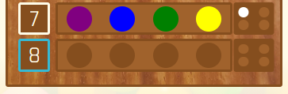
Don't worry if you get to the last row on the board. A new row will be created to allow you to continue. There is a limit, but you would have to be going for quite a while to reach it
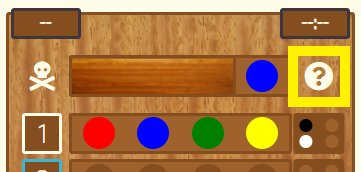If you are struggling, tap (or click) the question mark icon. A prompt will ask if you are sure you wish to reveal a colour. If you select 'OK', the hidden colour furthest to the right will be revealed. If you have opted for a hint and change your mind, simply select 'Cancel'. You may not reveal the final colour this way but you may reveal more than one, one at a time
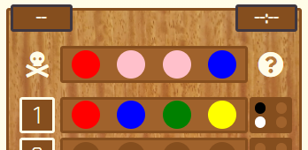If you really don't want to continue, or you just want to know the answer, tap (or click) the skull and bones icon. A prompt will appear allowing you to confirm your choice to give up. If you are certain, select 'OK' and the game will end. The solution will be revealed and you will be given the option to play again. If you decline that option, the game board will remain so you can review the game. If you change your mind about giving up, simply select 'Cancel' on the first prompt
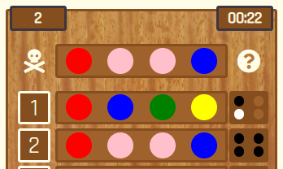If you are successful in guessing the correct solution, you win! A prompt will appear with the details of your game and you will have an option to play again. To do so, select 'OK'. If you wish to bask in your glory, select 'Cancel' and the guesses and solution will remain for you to view
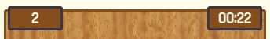If you were clever (or lucky!) enough to beat your previous best score or best time without having changed any settings, the values will be updated and displayed. They are independent of each other. If you guess in fewer guesses but take a longer time, the score will update and the time will remain the same and vice versa
Settings
Option Settings
If the 'Colour Blind?' checkbox is ticked, balls will display the name of their content colour when a mouse is hovered over them. If playing on a touch screen, perform a held tap to display the assist.
If the 'Audio?' checkbox is ticked, and MP3 audio files are enabled by your device, audio will be enabled.
Play Settings
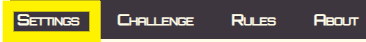To bring up the settings tab, tap (or click) settings in the navbar
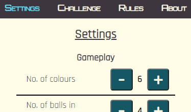The settings options will appear, the colour of 'settings' will change and a number of selections can be made
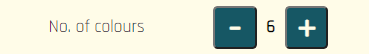Tap (or click) the or 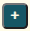 icons to change the number of colours allowed in the game
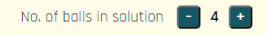Tap (or click) the or icons to change the number of balls in the solution of the game
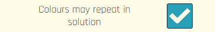Tap (or click) the checkbox or text to enable/disable a check box
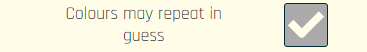Depending on the settings, some checkboxes may be disabled
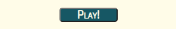Once you are happy with your settings, tap (or click) the play button.
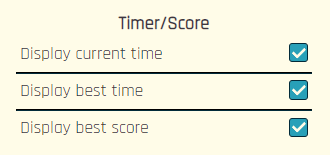If you are checking the settings of the current game, or changing the score and timer options in the middle of a game, you can tap (or click) settings while they are still displayed. This will return you to your current game
Challenge
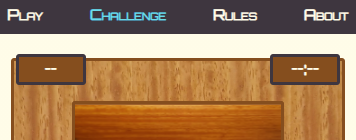The rules of the challenge are exactly the same as the normal game with some set parameters:
- The 'hint' and 'give up' icons are not available
- The current timer, best score and best time are always present
- The number of colours is 6
- The number of balls in the solution is 4
- You are limited to 6 guesses